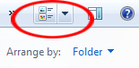

Free
computer Tutorials
|
Free
computer Tutorials
|
|
 back back |
Stay at Home and Learn | ||||
Sorting Images in Windows 7In the previous section, you learned how to add information to an image. In this section, you'll se what you can do with all this information. This comes under the topic of Sorting.
First, though, change your View slider from Tiles to Details:  When you arrange the window to Details view, your screen should look like this one: We now have a list of images with the Name, Date, Tags, Size and Ratings showing. These headings can all be used to sort your images. Click on the Ratings, for example, and you'll see a dropdown box: You can choose to display only images with 1, 2, 3, 4 or 5 stars. All you need to do is to check each box. The ones not checked will then be hidden: Here, we're choosing to display only 1 and 2 star images, perhaps with a view to deleting them. (To delete an image, right-click. From the menu that appears, select Delete. Or choose Rename to change the name of the image.) To view all your images again, uncheck the boxes. Try clicking some of the other headings. Try a sort by Tags to see what happens. If you want more choices right-click anywhere on the headings
to see the following menu: The ones we have displayed have a check mark next to them. Click an item on the list to either select or deselect it. In the image below, we have deselected the Size and Date and added the Dimensions instead: And here's the result:
To see other sort options, select the More option from the menu. You should then see this dialogue box: Scroll down to see a huge list of options you can choose from.
Arrange By optionsAnother way to sort you images is via the "Arrange by" dropdown
list. Click the arrow to see the following: In the image below, we've chosen to arrange our images by Month: Play around with the various options on the menu and see what they do. Change it back to folders, if you want the Windows 7 default view.
Searching for ImagesOne good reason to add Tags to all your images is that
it helps in a Windows search. In the example below, we've typed "York
minster" into the search box on the Start menu: Notice that Windows has found all the images from our folder, even though none of the pictures was called "York minster": it found them because of the tags.
And that's it for images in Windows 7. We'll move on.
In the next part, you'll learn how to take a screenshot and then manipulate
it in Windows 7 Paint.
Taking Screenshots in Windows 7 --> |
|||||
|